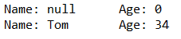
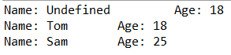
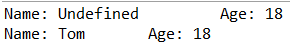

Классы и объекты
Java является объектно-ориентированным языком, поэтому такие понятия как "класс" и "объект" играют в нем ключевую роль. Любую программу на Java можно представить как набор взаимодействующих между собой объектов.
Шаблоном или описанием объекта является класс, а объект представляет экземпляр этого класса. Класс определяется с помощью ключевого слова class:
В данном случае класс называется Person. После названия класса идут фигурные скобки, между которыми помещается тело класса - то есть его поля и методы (функции, описанные в теле класса). Функции, возвращающие поля класса, называются свойствами.
Любой объект может обладать двумя основными характеристиками: состояние - некоторые данные, которые хранит объект, и поведение - действия, которые может совершать объект.
Для хранения состояния объекта в классе применяются поля или переменные класса. Для определения поведения объекта в классе применяются методы. Например, класс Person, который представляет человека, мог бы иметь следующее определение:
- 1| class Person{
- 2|
- 3| String name; // имя
- 4| int age; // возраст
- 5| void displayInfo(){
- 6| System.out.printf("Name: %s \tAge: %d\n", name, age);
- 7| }
- 8| }
В классе Person определены два поля: name представляет имя человека, а age - его возраст. И также определен метод displayInfo, который ничего не возвращает и просто выводит эти данные на консоль.
Для использования данного класса подойдет, например, следующая программа:
- 1 | public class Program{
- 2 |
- 3 | public static void main(String[] args) {
- 4 |
- 5 | Person tom;
- 6 | }
- 7 | }
- 8 | class Person{
- 9 |
- 10| String name; // имя
- 11| int age; // возраст
- 12| void displayInfo(){
- 13| System.out.printf("Name: %s \tAge: %d\n", name, age);
- 14| }
- 15| }
Обычно классы определяются в разных файлах. В данном случае для простоты определены два класса в одном файле. Стоит отметить, что в этом случае только один класс
может иметь модификатор public (в данном случае это класс Program), а сам файл кода должен называться по имени этого класса, то есть в данном случае файл должен называться Program.java.
Класс представляет новый тип, поэтому можно определять переменные, которые представляют данный тип. Так, здесь в методе main определена переменная tom, которая представляет класс Person. Но пока эта переменная не указывает ни на какой объект и по умолчанию она имеет значение null. Ее пока невозможно использовать, поэтому вначале необходимо создать объект класса Person.
Конструкторы
Кроме обычных методов классы могут определять специальные методы, которые называются конструкторами. Конструкторы вызываются при создании нового объекта данного класса. Конструкторы выполняют инициализацию объекта.
Если в классе не определен ни один конструктор, то для этого класса автоматически создается конструктор без параметров.
Выше определенный класс Person не имеет никаких конструкторов, поэтому для него автоматически создается конструктор по умолчанию, который можно использовать для создания объекта Person. Например, создание одного объекта:
- 1 | public class Program{
- 2 |
- 3 | public static void main(String[] args) {
- 4 |
- 5 | Person tom = new Person(); // создание объекта
- 6 | tom.displayInfo();
- 7 |
- 8 | // изменяем имя и возраст
- 9 | tom.name = "Tom";
- 10| tom.age = 34;
- 11| tom.displayInfo();
- 12| }
- 13| }
- 14| class Person{
- 15|
- 16| String name; // имя
- 17| int age; // возраст
- 18| void displayInfo(){
- 19| System.out.printf("Name: %s \tAge: %d\n", name, age);
- 20| }
- 21| }
Для создания объекта Person используется выражение new Person(). Оператор new выделяет память для объекта Person. Затем вызывается конструктор по умолчанию, который не принимает никаких параметров.
В итоге после выполнения данного выражения в памяти будет выделен участок, где будут храниться все данные объекта Person, а переменная tom получит ссылку на созданный объект.
Если конструктор не инициализирует значения переменных объекта, то они получают значения по умолчанию. Для переменных числовых типов это число 0, а для типа string и классов - это значение null.
После создания объекта можно обратиться к переменным объекта Person через переменную tom и установить или получить их значения, например, tom.name = "Tom".
Консольный вывод:

Если необходимо, чтобы при создании объекта производилась какая-то логика, например, чтобы поля класса получали какие-то определенные значения, то можно определить в классе свои конструкторы. Например:
- 1 | public class Program{
- 2 |
- 3 | public static void main(String[] args) {
- 4 |
- 5 | Person bob = new Person(); // вызов первого конструктора без параметров
- 6 | bob.displayInfo();
- 7 |
- 8 | Person tom = new Person("Tom"); // вызов второго конструктора с одним параметром
- 9 | tom.displayInfo();
- 10|
- 11| Person sam = new Person("Sam", 25); // вызов третьего конструктора с двумя параметрами
- 12| sam.displayInfo();
- 13| }
- 14| }
- 15| class Person{
- 16|
- 17| String name; // имя
- 18| int age; // возраст
- 19| Person(){
- 20| name = "Undefined";
- 21| age = 18;
- 22| }
- 23| Person(String n) {
- 24| name = n;
- 25| age = 18;
- 26| }
- 27| Person(String n, int a) {
- 28| name = n;
- 29| age = a;
- 30| }
- 31| void displayInfo(){
- 32| System.out.printf("Name: %s \tAge: %d\n", name, age);
- 33| }
- 34| }
Теперь в классе определено три конструктора, каждый из которых принимает различное количество параметров и устанавливает значения полей класса.
Консольный вывод программы:

Ключевое слово this
Ключевое слово this представляет ссылку на текущий экземпляр класса. Через это ключевое слово можно обращаться к переменным, методам объекта, а также вызывать его конструкторы. Например:
- 1 | public class Program{
- 2 |
- 3 | public static void main(String[] args) {
- 4 |
- 5 | Person undef = new Person();
- 6 | undef.displayInfo();
- 7 |
- 8 | Person tom = new Person("Tom");
- 9 | tom.displayInfo();
- 10|
- 11| Person sam = new Person("Sam", 25);
- 12| sam.displayInfo();
- 13| }
- 14| }
- 15| class Person{
- 16|
- 17| String name; // имя
- 18| int age; // возраст
- 19| Person(){
- 20| this("Undefined", 18);
- 21| }
- 22| Person(String name) {
- 23| this(name, 18);
- 24| }
- 25| Person(String name, int age) {
- 26| this.name = name;
- 27| this.age = age;
- 28| }
- 29| void displayInfo(){
- 30| System.out.printf("Name: %s \tAge: %d\n", name, age);
- 31| }
- 32| }
В третьем конструкторе параметры называются так же, как и поля класса, и, чтобы разграничить поля и параметры, применяется ключевое слово this:
Так, в данном случае указывается, что значение параметра name присваивается полю name.
Кроме того, три конструктора выполняют идентичные действия: устанавливают поля name и age. Чтобы избежать повторов, с помощью this можно вызвать один из конструкторов класса и передать для его параметров необходимые значения:
- 1| Person(String name) {
- 2| this(name, 18);
- 3| }
В итоге результат программы будет тот же, что и в предыдущем примере.
Инициализаторы
Кроме конструктора начальную инициализацию объекта вполне можно было проводить с помощью инициализатора объекта. Инициализатор выполняется до любого конструктора. То есть в инициализатор можно поместить код, общий для всех конструкторов:
- 1 | public class Program{
- 2 |
- 3 | public static void main(String[] args) {
- 4 |
- 5 | Person undef = new Person();
- 6 | undef.displayInfo();
- 7 |
- 8 | Person tom = new Person("Tom");
- 9 | tom.displayInfo();
- 10|
- 11| }
- 12| }
- 13| class Person{
- 14|
- 15| String name; // имя
- 16| int age; // возраст
- 17|
- 18| /*начало блока инициализатора*/
- 19| {
- 20| name = "Undefined";
- 21| age = 18;
- 22| }
- 23| /*конец блока инициализатора*/
- 24| Person(){
- 25|
- 26| }
- 27| Person(String name){
- 28| this.name = name;
- 29| }
- 30| Person(String name, int age){
- 31| this.name = name;
- 32| this.age = age;
- 33| }
- 34| void displayInfo(){
- 35| System.out.printf("Name: %s \tAge: %d\n", name, age);
- 36| }
- 37| }
Консольный вывод:
